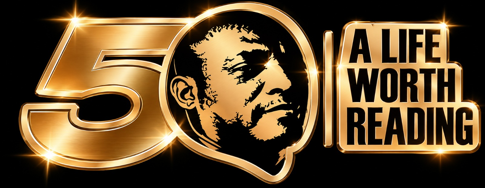

Event Programme
- 2:30–4:00 PMRed Carpet & Guest Arrival
- 4:00–4:05 PMOpening Prayer
- 4:05–4:25 PMOpening Musical Sounds
- 4:25–4:35 PMWelcome Address / Purpose of Gathering
- 4:35–4:45 PMArrival / Formal Presentation of the Author
- 4:45–5:00 PMIntroduction of Dignitaries
- 5:00–5:05 PMDocumentary: The Journey So Far
- 5:05–5:25 PMShort Messages
- 5:25–5:40 PMSong Ministration
- 5:40–6:25 PMLaunch of the Book
- 6:25–6:50 PMAnti Drug High School & Youth Tour Launch
- 6:50–7:10 PMGoodwill Messages & Prayers from Fathers
- 7:10–7:20 PMPop Champagne
- 7:20–7:25 PMVote of Thanks
- 7:25–7:30 PMClosing Prayer
- 7:30 PMOfficial Photographs
- 7:30–7:55 PMMusical Interlude
- 7:55–8:00 PMCutting of Cake
- 8:00–8:10 PMNetworking
- 8:10 PMEnd